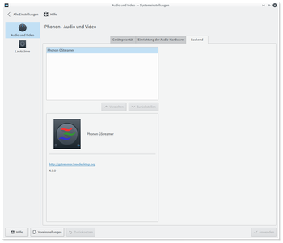

Phonon
Dieser Artikel wurde für die folgenden Ubuntu-Versionen getestet:
Ubuntu 16.04 Xenial Xerus
Ubuntu 14.04 Trusty Tahr
Zum Verständnis dieses Artikels sind folgende Seiten hilfreich:
Phonon  ist die Multimedia-Schnittstelle des KDE-Desktops, die zusammen mit KDE 4 eingeführt wurde. Phonon ist eine Zwischenschicht, welche den Zugriff von Programmen auf das verwendete Soundsystem abstrahiert. Der Vorteil ist, dass Programme auf eine einheitliche API zurückgreifen können und nicht extra angepasst zu werden brauchen. Dadurch können auch alle Einstellungen zentral vorgenommen werden.
ist die Multimedia-Schnittstelle des KDE-Desktops, die zusammen mit KDE 4 eingeführt wurde. Phonon ist eine Zwischenschicht, welche den Zugriff von Programmen auf das verwendete Soundsystem abstrahiert. Der Vorteil ist, dass Programme auf eine einheitliche API zurückgreifen können und nicht extra angepasst zu werden brauchen. Dadurch können auch alle Einstellungen zentral vorgenommen werden.
Auch das Framework Qt verwendete seit Version 4.4 Phonon als Standard-Multimediaschnittstelle. In Qt 5 ist es nicht mehr offiziell enthalten, wird aber durch die Phonon-Entwickler und KDE weiterhin gepflegt.
Installation¶
Phonon ist fester Bestandteil von Kubuntu und muss nicht extra installiert werden.
Backends installieren¶
Phonon kann verschiedene Backends nutzen. Es hängt teilweise von der gewünschten Anwendung ab, für welches man sich entscheiden sollte. Kubuntu setzt wie viele andere Linux-Distributionen standardmäßig auf GStreamer.
GStreamer¶
Bis inklusive Kubuntu 14.04
phonon-backend-gstreamer
 mit apturl
mit apturl
Paketliste zum Kopieren:
sudo apt-get install phonon-backend-gstreamer
sudo aptitude install phonon-backend-gstreamer
Ab Kubuntu 16.04
phonon4qt5-backend-gstreamer
mit apturl
Paketliste zum Kopieren:
sudo apt-get install phonon4qt5-backend-gstreamer
sudo aptitude install phonon4qt5-backend-gstreamer
VLC¶
Alternativ gibt es ein auf VLC beruhendes Backend.
Bis inklusive Kubuntu 14.04
phonon-backend-vlc
mit apturl
Paketliste zum Kopieren:
sudo apt-get install phonon-backend-vlc
sudo aptitude install phonon-backend-vlc
Ab Kubuntu 16.04
phonon4qt5-backend-vlc
mit apturl
Paketliste zum Kopieren:
sudo apt-get install phonon4qt5-backend-vlc
sudo aptitude install phonon4qt5-backend-vlc
Null¶
Weiterhin steht ein "Null-Backend" zur Verfügung, bei dem jegliche Soundausgabe im "Nichts" verschwindet. Wer dies benötigen sollte, muss das Paket
Bis inklusive Kubuntu 14.04
phonon-backend-null
mit apturl
Paketliste zum Kopieren:
sudo apt-get install phonon-backend-null
sudo aptitude install phonon-backend-null
Ab Kubuntu 16.04
phonon4qt5-backend-null
mit apturl
Paketliste zum Kopieren:
sudo apt-get install phonon4qt5-backend-null
sudo aptitude install phonon4qt5-backend-null
installieren.
Experten-Info:
Phonon unterstützt noch weitere Backends, z.B. DirectX und Quicktime. Diese spielen jedoch unter Linux keine Rolle bzw. sind unter Ubuntu erst gar nicht installierbar, sondern sind primär für die Portierungen von KDE 4 auf Windows und Mac OS X gedacht. Eine Übersicht über alle Backends findet man auf dieser Projektseite .
Benutzung¶
|  |
| Phonon in den Systemeinstellungen |
Eine eigentliche Benutzung von Phonon gibt es nicht, da "einfach" alle Programme unter Plasma auf die Schnittstellen zugreifen. Es gibt aber eine Handvoll Einstellmöglichkeiten. Diese erreicht man über
"Systemeinstellungen -> Multimedia -> Audio und Video"
Sofern man verschiedene Geräte (z.B. sogenannte "Soundkarten") hat, die das Audiosignal ausgeben oder aufnehmen können, so kann man im Reiter "Gerätepriorität" das bevorzugte Gerät einstellen. Zuerst wird versucht, über das erste (an erster Stelle in der Liste) Gerät den Ton auszugeben. Gelingt dieses nicht, so wird das nächste benutzt, etc.
So ist es dadurch möglich, eine zuhause genutzte USB-Sound-"Karte" an einem Notebook als erstes Gerät einzutragen. Als zweites wird die interne Soundkarte ausgewählt. Zuhause wird dann der Ton über die externe, unterwegs über die interne Sound-"Karte" ausgegeben. Klickt man hier auf "Erweiterte Geräte anzeigen", so werden auch "andere" Geräte angezeigt, z.B. der Soundserver PulseAudio.
Im Reiter "Backend" kann man einstellen, welches Backend verwendet werden soll. Je nach Backend stehen im rechten Teil des Fensters noch weitere Einstellmöglichkeiten zur Verfügung, welche von Backend zu Backend aber variieren können (oder erst gar nicht vorhanden sind).
Einstellungen ohne KDE ändern¶
Um die Einstellungen von Phonon z.B. unter GNOME zu ändern, muss zunächst das folgende Paket installiert werden:
systemsettings
mit apturl
Paketliste zum Kopieren:
sudo apt-get install systemsettings
sudo aptitude install systemsettings
Dabei werden die benötigten KDE-Abhängigkeiten automatisch mitinstalliert. Danach kann man die KDE-Systemeinstellungen über ein Terminal mit dem Befehl
systemsettings
bzw. ab 16.04
systemsettings
aufrufen.
 Übersichtsseite zu Sound und Soundkarten
Übersichtsseite zu Sound und Soundkarten- Erstellt mit Inyoka
-
 2004 – 2017 ubuntuusers.de • Einige Rechte vorbehalten
2004 – 2017 ubuntuusers.de • Einige Rechte vorbehalten
Lizenz • Kontakt • Datenschutz • Impressum • Serverstatus -
Serverhousing gespendet von